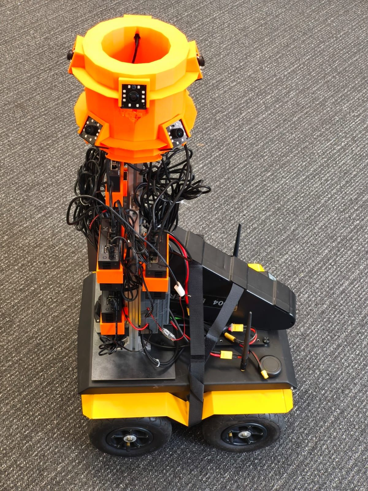
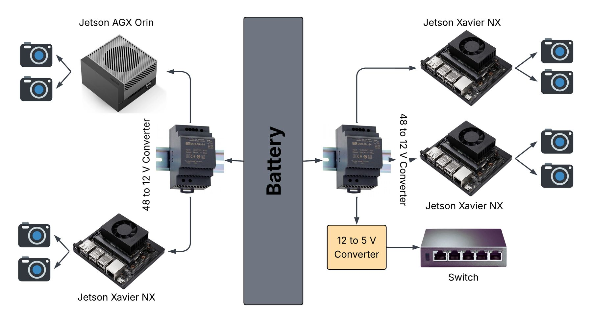
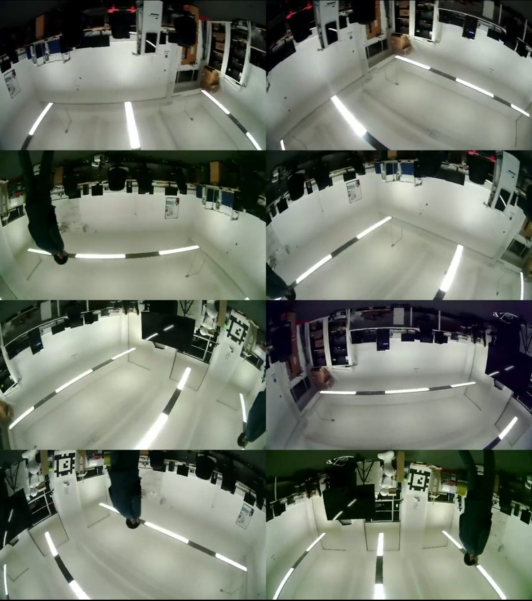
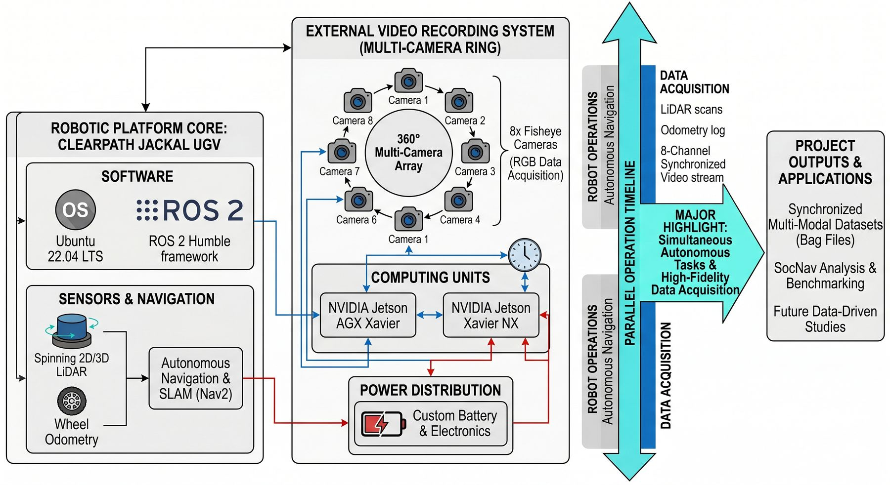
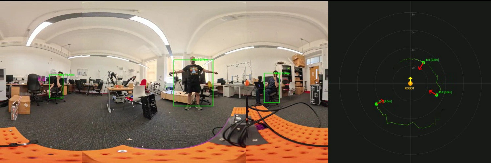

360° Multi-Camera Platform
The goal of this project was a system that records everything around a mobile robot in full 360°, indoors and outdoors, and then makes sense of those recordings. For the hardware, I designed and built a ring of eight fisheye cameras and four NVIDIA Jetsons that rides on the Jackal, runs from its own battery and keeps all eight video streams synchronised to within 2 ms. For the software, I built a ROS 2 pipeline that finds people in 360° video and estimates where each one stands and which way they face.

The recording system
A self-contained 360° camera rig that any mobile robot can carry, indoors or outdoors.
Eight cameras, one ring
Eight ELP fisheye cameras sit on a 3D-printed ring above the robot, angled so that neighbouring views overlap and together cover the full 360°.
Four NVIDIA Jetsons sit underneath, each handling two cameras: one Jetson AGX Orin and three Jetson Xavier NX units. Every camera records 1080p at 30 fps.

Runs on its own power
The rig carries its own battery pack, so it works wherever the robot can drive, with no cables to a wall socket. 48 → 12 V converters feed the four Jetsons, and a 12 → 5 V converter powers the network switch.

Eight streams, one timeline
The Jetsons are connected through a network switch on a dedicated wired network. The three Xavier NX units stream their cameras over RTSP to the AGX Orin, which also reads its own two cameras over USB.
On the Orin, a DeepStream pipeline batches all eight streams, aligns them frame by frame and logs every frame's timestamp, keeping the offset between cameras below 2 ms. The aligned frames are tiled into a 4 × 2 grid, encoded on the GPU as H.264 and written to a single video file.

Recording on the move
The camera system plugs into the Jackal's mission orchestrator. When the robot gets a navigation goal, it starts recording on the Jetsons over SSH, waits for the cameras to come up, records its own LiDAR and navigation data alongside, and stops and transfers everything when it arrives.
The whole 11-step sequence starts from a single goal set in RViz, which makes large, repeatable 360° datasets practical.
Processing the recordings
A ROS 2 pipeline that turns raw 360° video into people the robot can reason about: where each person is, which way they face, and who is who over time.

Reproject
Split the equirectangular frame into perspective views, removing fisheye distortion and the seam.
Detect
YOLO finds people in every view. Duplicates are merged in spherical coordinates.
Localise
Bearing from the box's angle, distance from the ground plane using the camera's height.
Orient
Upper-body keypoints give the direction each person is facing.
Track
Each person keeps a stable ID across frames, with smoothed position and heading.
Built for the robot
Results are published as custom ROS 2 messages with a 2D position, heading and ID for every person, plus RViz markers for live viewing. The pipeline runs on the GPU of the Jetson AGX Orin, and the geometry is covered by unit tests that run without ROS or a GPU.
This gives a socially aware robot what it needs to plan around people: who is nearby, where they are and where they are heading.
/stack